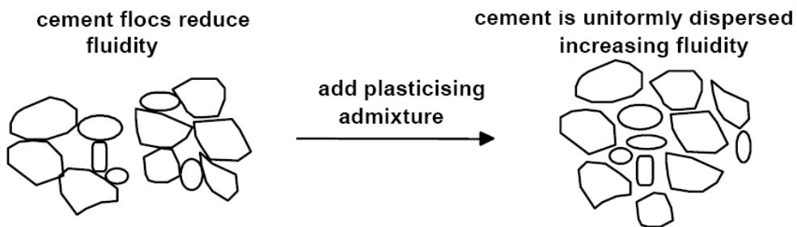
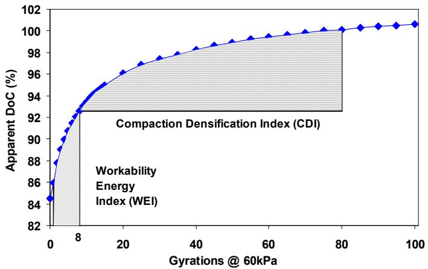
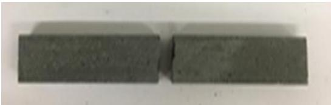
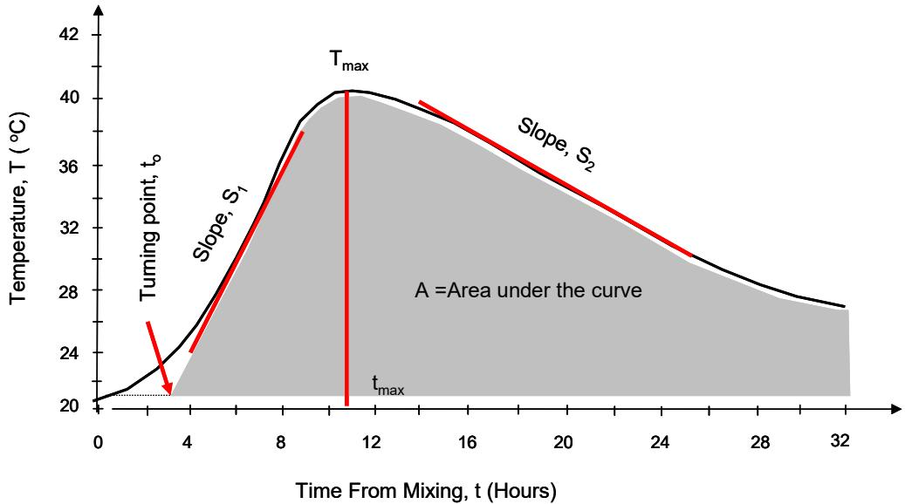

Workability of Concrete
Workability of Concrete is a defining multi-attribute property of Fresh Concrete, Workability & Mixing that encompasses cohesion, compactibility, segregation resistance, retention of workability, water reduction, and consistency [19]. It ensures proper placement in forms without segregation [19] and is commonly quantified using slump test measurements to determine the consistency of the mix [19], although the standard slump cone test may not be suitable for all types of concrete, such as those with very low flowability or specific aggregate sizes [19]. Subjectively defined and considered controversial in technical literature — “an unreliable term” (Tassios 1973) whose “exaggerated broadness of meaning does not help the expressiveness of the term” [1], this concept is explored through distinct quantification approaches. These range from theoretical frameworks like Excess Paste Theory to specific measurement indices such as the Workability Energy Index and Compaction Densification Index derived from gyratory compaction. Other members include specialized test methods for different concrete states or applications, including the Cabrera Slump Value for dry mixes, the VKelly Test for field consistency in slip-form paving, and Green Strength for fresh-state load capacity. The Gyratory Compactor serves as the primary apparatus linking several of these indices, while the Vibrating Slope Apparatus offers an alternative vibration-based evaluation method.
Sources (19)
Sub-concepts (8)
Core Attributes of Concrete Workability
The properties of concrete mixtures include compactibility, which refers to the ease of achieving maximum density under compaction effort, and cohesion, defined as the internal bonding that prevents segregation. Additionally, these mixtures are characterized by segregation resistance, or the ability to maintain homogeneity, and retention, which is the ability to maintain workability over time [1].
Influence of Cementitious Materials and Admixtures
The addition of supplementary cementitious materials can lead to rapid slump loss, unstable air content, and mixtures that are perceived as unfriendly or hard to work [2]. Specifically, fly ash replacement in binary cements generally reduces water requirement for a given consistency, allowing it to function as a water-reducing agent that improves flowability; conversely, slag replacements tend to increase the water demand, meaning ternary cement blends may exhibit flowability comparable to ordinary Portland cement concrete [3]. Round fly ash particles exert a plasticizing effect on concrete rheology, and increasing their content within ternary blends significantly improves flowability while reducing bleeding [4]. In contrast, silica fume increases the water requirement and stickiness of a concrete mixture due to its high surface area [5]. The specific gravity and surface area of supplementary cementitious materials directly influence workability; for instance, slag’s high specific surface value (247 yd²/lb) adsorbs more mixing water than Portland cement (209 yd²/lb), reducing workability despite its lower specific gravity providing increased paste volume [6]. Furthermore, the addition of Type K expansive cement reduces the workability of fresh concrete due to its increased fineness and water consumption during ettringite formation, necessitating high-range water-reducing admixtures (HRWRAs) to restore slump without altering the water-to-cement ratio [7]. However, Type K expansive cement significantly reduces both the rate and magnitude of bleeding in fresh concrete because its high water demand for hydration and ettringite formation leaves less free water available for bleed water [7]. Regarding superabsorbent polymers, finer SAP particles are more effective at improving workability than coarser variants, as their higher absorption rate allows for better water distribution within the mixture [8], and SAP mixtures exhibit less slump loss over time compared to control mixes, with retention performance linked to the polymer’s cross-linking density and absorption capacity [8].
 Effects of SAP on the slump of concrete for (a) SAP-a and (b) SAP-b, where Sa-0 is dry and Sa-10 is pre-absorbed (particle size: SAP-a > SAP-b) [8]
Effects of SAP on the slump of concrete for (a) SAP-a and (b) SAP-b, where Sa-0 is dry and Sa-10 is pre-absorbed (particle size: SAP-a > SAP-b) [8]
To manage these complexities, the use of chemical admixtures like water reducers is necessary to manage setting and strength gain behavior when varying the dosage of supplementary cementitious materials [2]. Water-reducing agents neutralize surface charges on cement particles to free trapped water and drive the particles apart, thereby improving their ability to move past each other [5]. Increasing the fineness of cementitious materials requires a proportional increase in superplasticizer dosage to achieve target workability levels [4], though doubling or tripling recommended admixture dosages can delay the silicate peak in hydration curves, leading to significant retardation and early strength development problems [4]. Different types of admixtures present unique challenges: synthetic detergent-based air-entraining agents are highly sensitive to variations in water content, where even minor changes can cause dramatic fluctuations in the entrained air volume, requiring precise monitoring of aggregate moisture and strict calibration of batching plant dosing systems to prevent drastic workability shifts [1]; lignosulfonate-based water reducers can extend the compaction window proportionally to their dosage and water reduction capacity, but they do not improve finishibility and may cause setting delays and poor early strength gain in cold weather conditions [1]; and higher dosages of polycarboxylate-based superplasticizers can entrain excessive air into roller-compacted concrete, making the mixture excessively sticky, a stickiness beyond a certain limit that is undesirable and requires careful avoidance during mix design [1].

Schematic sketch of plasticizing mechanism [1]Role of Aggregates and Paste Volume
The use of reclaimed asphalt pavement (RAP) as an aggregate in concrete paving mixes requires specific guidance regarding acceptable RAP materials to ensure the mixture maintains adequate workability and durability for construction. [9]
Recycled concrete aggregate can be utilized in shorter performance life pavements, such as 8-year pavement designs, and in two-lift construction applications to optimize material usage. [9]
In pervious concrete, the aggregate moisture content and the amount of dust in the aggregate source must be determined as part of the process to calculate the required mix water. [10]
Concrete with a high cement content exhibits high cohesiveness but can become sticky, which may lead to increased risk of shrinkage and cracking problems. [5]
 Effect of cement content on concrete compressive strength [5]
Effect of cement content on concrete compressive strength [5]
Well-graded aggregate improves workability because there is less interlock between single-sized particles. [5]
Spherical, well-rounded aggregates with smooth surfaces increase workability, whereas angular, elongated, or rough-surfaced aggregates decrease workability and cause segregation. [5]
Internal curing using saturated lightweight fine aggregate (LWFA) replaces approximately 20% to 25% of the fine aggregate with water reservoirs, maintaining internal moisture above 90% during early-age hydration. This mechanism prevents premature pore drying and reduces autogenous shrinkage risks associated with low water-to-cementitious material ratios below 0.40. [11]
The use of lightweight fine aggregate for internal curing results in concrete with a lower coefficient of thermal expansion and modulus of elasticity compared to conventionally cured mixtures. These altered mechanical properties reduce stresses under shrinkage strains while simultaneously increasing compressive strength. [11]
The Taylor et al. (2012) study found that workability is controlled by paste volume relative to aggregate voids. Below a critical Vp/Vvoid Ratio (~125–150% depending on binder type), mixtures are unworkable regardless of water-reducing admixture dosage. Once sufficient paste is provided to fill voids and coat aggregate particles, increasing paste further increases workability. [5]
Excess Paste Theory defines workability as the result of a lubricating layer of cement paste that coats aggregate particles, allowing them to slide past one another during placement [15]. Proposed by Kennedy in 1940, this theory posits that sufficient paste must fill voids and coat surfaces to minimize interparticle friction, thereby ensuring good flowability [15]. The rheological properties and thickness of this excess paste layer significantly contribute to the fresh concrete’s ability to flow and hold its shape [15].
In pervious concrete, the Workability Evaluation Index (WEI) is influenced more significantly by binder content than by water-to-cement ratio. [12]

Definition of workability index parameters [12]The paste to combined aggregate voids volume ratio (Vpaste/Vvoids) should ideally range between 125 and 175 percent to ensure proper workability, though higher ratios may be used in specific mix designs. [13]
Specialized Concrete Types (Pervious, ECON, SFSCC)
For dry concretes such as Roller-Compacted Concrete, the most important attributes vary by mixture type. In pervious concrete, a small amount of sand passing the No. 8 sieve but retained on the No. 200 is beneficial for both strength and workability, with typical sand-to-total aggregate ratios ranging from 5% to 10% [10]. These mixtures typically utilize a low water/cement ratio ranging from 0.27 to 0.43, requiring extreme care to ensure the appropriate amount of water is used and the slab does not dry out prematurely [10]; however, pervious concrete mixtures exhibit a narrow production window for water-to-cement ratios, typically ranging from approximately 0.27 to 0.33 [12]. To manage these mixes, retarders are frequently employed to delay hydration in very dry mixes, thereby providing sufficient time for placement and curing [10], while air entraining agents are utilized to improve the freeze-thaw durability of the cementitious paste [10]. Furthermore, fly ash replacement in pervious concrete improves workability compared to slag or limestone powder replacements, as evidenced by better mortar coverage and ball formation during manual testing [6].
 Workability test results of pervious concrete mixtures: Portland cement (top left), Portland cement - 15% Fly ash (top right), Portland cement - 15% Slag (bottom left), and Portland cement - 15% Limestone (bottom right) [6]
Workability test results of pervious concrete mixtures: Portland cement (top left), Portland cement - 15% Fly ash (top right), Portland cement - 15% Slag (bottom left), and Portland cement - 15% Limestone (bottom right) [6]
In electrically conductive concrete (ECON), the percolation threshold for carbon fiber in plant-produced mixtures is determined to be 0.35 vol.%, which differs from laboratory conditions where a higher threshold of 0.75 vol.% may apply without substantial reduction in electrical resistance [14]. Higher air content can hinder electron flow leading to increased electrical resistance; for instance, a batch with a higher water-to-cement ratio and increased air-entraining admixture resulted in higher 28-day resistance despite similar fresh-stage performance [14]. To maintain conductivity, introducing carbon fibers at the job site rather than at the ready mixed concrete plant minimizes fiber degradation during transit, which otherwise leads to increased electrical resistance and compromised conductivity [14]. In ECON, electrical resistance grows exponentially during the first 7 days after casting, after which the increase slows with no significant rise observed after 28 days, a pattern that is a critical factor for quality control and assessing the functional performance of heated pavement systems [14]. For ECON, the maximum truckload of a single batch should be limited to 6 cubic yards to reduce the chances of fiber balling and poor distribution, and fresh-stage electrical resistance measurements must be conducted at the job site against target values; for example, a 14 in. by 4 in. by 4 in. beam with copper mesh electrodes should fall within 4 to 10 Ω [14]. Finally, self-consolidating slip-form concrete (SFSCC) requires a specific balance of green strength, typically optimized at 1.3 to 2.5 kPa for a flow diameter of 41%–47%, to maintain shape stability without compromising self-consolidation [15], whereas the addition of nano-clay materials such as Actigel significantly increases yield stress, viscosity, and thixotropy in SFSCC, while water reducers and air-entraining agents function to reduce these thixotropic properties [15].
 Ready mixed concrete plant trial samples’ electrical performance [14]
Ready mixed concrete plant trial samples’ electrical performance [14]
3D Printable Concrete Properties
Dry cast products containing surfactants significantly improve finishibility without entraining excessive air, offering a cost-effective alternative to traditional water reducers for roller-compacted concrete; in contrast, polycarboxylate-based dry cast products provide workability retention but yield less significant strength gains due to their weaker chemical action [1]. Regarding 3D printable concrete, the addition of silica fume and viscosity modifying agents (VMAs) decreases flowability and extrudability but increases buildability and shape-holding ability, whereas increasing superplasticizer dosage enhances flowability at the expense of reduced buildability [16]. Mixtures with very low water-to-binder (w/b) ratios exhibit unacceptable flowability and extrudability for 3D printing, often causing feeding difficulties or nozzle blockage, while excessive w/b ratios lead to structural deformation such as slumping of printed layers [16]. However, the use of a highly flowable, rapid-set grout to replace cement can simplify mix design and effectively achieve proper extrudability and buildability; for example, a mixture with 20% grout replacement maintained a final flow spread of 176 mm after 60 minutes of rest [16].
 shows the effects of grout and superplasticizer on the printing qualities of the 3D printed concrete objects. (a) G20-SP1.25 [16]
shows the effects of grout and superplasticizer on the printing qualities of the 3D printed concrete objects. (a) G20-SP1.25 [16]
Workability assessment incorporates green strength to quantify the fresh concrete’s resistance to deformation under its own weight or external handling forces. This property is critical for ensuring that freshly extruded concrete can hold its shape during construction processes such as slip-form paving [15]. The development of sufficient green strength allows the material to maintain stability without requiring extensive finishing or vibration, thereby supporting efficient field application [15].
Defects in 3D printed concrete such as air bubble pop-outs, discontinuity, and slumping are largely related to flow behavior, while cracking is primarily caused by plastic shrinkage requiring prompt curing [16]. Furthermore, printed concrete samples exhibit anisotropic mechanical properties, with compressive strength loaded parallel to filaments being much lower than when loaded perpendicular to them due to potential filament buckling [16].

Sample loaded parallel to printed filaments Figure 6.8. Failure modes of samples under flexural load tested at 28 days [16]Workability Test Methods and Rheological Characterization
Concrete workability and consistency are assessed through various methodologies, including the Cabrera Slump Value or Vebe time test. While the slump test (ASTM C143) serves as a useful indicator of uniformity between batches, it does not fully characterize concrete flow [5]. Traditional methods such as the Vebe test and Proctor test are criticized for their subjective nature and lack of discrimination; consequently, more recent approaches include the gyratory compactor (borrowed from asphalt testing), direct shear testing (from geotechnical engineering), and mechanistic measurements like rheology [1]. For modern concrete paving mixtures, the Box Test and the VKelly Test are used to assess workability by considering both the mixture’s response to vibration and its stiffness after vibration [17]. In the Shilstone workability factor chart, mixtures falling within Zone II are considered to have desirable workability and coarseness factors, while those in Zone IV are classified as sandy [13].
The Cabrera Slump Value serves as a specialized measurement protocol within Workability of Concrete for assessing the consistency of very dry mixes that exhibit zero slump in standard tests [1]. This method involves vibrating a filled slump cone for 20 seconds and measuring the resulting drop in concrete surface height, which is expressed in millimeters [1]. It is specifically designed for concretes with very dry consistencies, where the possible range of measurements is typically narrow, spanning from zero to approximately 50 or 60 mm [1].
The Compaction Densification Index (CDI) serves as a quantifying index for the workability of concrete [12]. It is defined as the ratio of the density achieved after a standard number of compaction efforts to the maximum theoretical density, thereby representing the practical amount of additional energy required to bring the mixture to its desired state [12]. This metric helps characterize the inherent workability and placeability of concrete mixtures by evaluating their response to gyratory compaction [1][12].
The workability of concrete is evaluated using a gyratory compactor to simulate field compaction conditions through controlled vertical pressure and rotational shear [1]. This apparatus applies an axial pressure and a rotating gyratory shear deformation via angled plates, which produces a kneading action that compacts the sample in a reproducible manner [1]. By measuring the reduction in specimen height during this process, the test quantifies workability based on the relationship between density and the number of gyrations [12].
The VKelly Test serves as a specific field procedure for assessing workability by measuring the time required to compact concrete in a standardized Kelly cylinder using a vibrating table [17]. Developed from a conventional Kelly ball modified with a vibrator, this method simulates field conditions at a vibration frequency of 5,000 vibrations per minute to determine the rate at which the device penetrates the mixture [17]. The resulting slope, known as the VKelly index, provides a quantitative measure of workability that correlates with performance in slipform paving machines [17]. This test is recognized as a standard field method for evaluating concrete workability alongside other techniques such as the Box Test [17].
The Vibrating Slope Apparatus (VSA) serves as a specific experimental method to quantify the workability of concrete by measuring the distance a sample flows down an inclined vibrating table [19]. Developed by the Federal Highway Administration, this test is particularly suitable for evaluating low-slump pavement concrete where traditional slump tests are less effective [19]. The apparatus characterizes rheological properties by analyzing flow behavior at different chute angles to determine workability indices [19].
The Workability Energy Index serves as a quantitative metric within the scope of concrete workability by calculating the energy required to compact fresh concrete to a specific degree of density [12]. Specifically, it is defined as the area under the compaction curve from one to eight gyrations, which defines the inherent workability requiring little additional compaction [12]. This index is obtained by approximating the area under the relative compaction curve using methods such as the trapezoidal rule between specific gyration counts [1].
Specific material types require specialized evaluation criteria. Thixotropy in cement-based materials is a time-dependent behavior where viscosity decreases under shearing but recovers when motion ceases; high thixotropy values enable rapid viscosity recovery, which controls the timely shape-holding ability of fresh concrete [15]. Monitoring the heat of hydration via calorimetry can forecast concrete setting time, specify curing periods, and assess thermal cracking risk; this method also identifies incompatibility between cementitious materials and verifies mix proportions against environmental conditions [18]. To accurately characterize cementitious materials, the configuration of the calorimeter device, sample size, mixing procedure, and testing environment temperature must be controlled as they significantly influence the features of the concrete heat evolution process [18].

Characterization of a typical heat evolution curve [18]Construction and Placement Considerations
Curing temperature significantly influences workability retention; when curing drops from 70°F to 50°F, set times for binary and ternary cements more than double, whereas raising the temperature from 70°F to 90°F reduces set times by only about 10–15%, indicating that these mixtures experience equal or less slump loss than ordinary Portland cement concrete in hot weather [3]. In truck-mixed concrete, maintaining a mixing speed of 20 to 22 revolutions per minute and adding one-fourth of the total water as the final ingredient are critical procedural factors for ensuring uniformity and preventing segregation [19]. While prolonged mixing can cause significant slump loss that contractors may attempt to restore by retempering with water, adding water alters the water-cement ratio and tends to reduce compressive strength more than retempering with superplasticizer [19]. In slipform paving applications, concrete typically arrives at the belt placer with a slump of approximately 44 to 50 mm (1.75 to 2 inches), which reduces to about 19 to 25 mm (0.75 to 1 inch) by the time it reaches the paver due to estimated slump loss during transit [19]. To better understand the ease with which concrete can be consolidated and finished as it passes through a paving machine, its behavior under and immediately after vibration must be assessed [17]. Furthermore, internal curing allows for the design of pavements with reduced thicknesses, such as decreasing an 8-inch slab to 7 inches or a 10-inch slab to 9 inches while maintaining equivalent performance limits, a reduction achieved by mitigating transverse cracking and compensating for increased joint spacing effects through improved durability properties [11].
 Effects of curing temperature on initial set time of concrete [3]
Effects of curing temperature on initial set time of concrete [3]
Regarding specific pavement types, exposed aggregate concrete pavements require a maximum water-to-cement ratio of 0.38 and a minimum cement content of 450 kg/m³ (758.5 lb./cu. yd.) to ensure adequate workability and durability [10]. For these pavements, a recommended average texture depth is targeted at 0.9 mm (0.035 in.) to ensure adequate friction [10]; however, the use of a super smoother in exposed aggregate concrete construction can increase texture depth to a maximum of 1.8 mm (0.07 in.), compared to common values between 1.1 and 1.6 mm (0.04 and 0.06 in.) when the equipment is not used [10]. Additionally, pervious concrete construction requires rear discharge trucks rather than front discharge because the steeper chutes assist in discharging the very stiff mix [10].
 Finished exposed aggregate surface [10]
Finished exposed aggregate surface [10]
Related concepts
- Roller-Compacted Concrete — workability characterization is particularly challenging for RCC
- Chemical Admixtures for Concrete — admixtures modify workability components
- Cabrera Slump Value — consistency measurement for dry concretes
- Gyratory Compactor (Concrete) — compactibility measurement device
- Vp/Vvoid Ratio — paste-to-voids ratio controlling workability
- Critical Minimum Cementitious Content — minimum binder for workable mixtures
- Fresh Concrete, Workability & Mixing
- Compaction Densification Index
- Excess Paste Theory
- Green Strength
- VKelly Test
- Vibrating Slope Apparatus (VSA)
- Workability Energy Index
References
- C. V. Hazaree, H. Ceylan, P. Taylor, K. Gopalakrishnan, K. Wang, and F. Bektas, "Use of Chemical Admixtures in Roller-Compacted Concrete for Pavements," National Concrete Pavement Technology Center, Ames, IA, 2013. [Online]. Available: https://www.intrans.iastate.edu/wp-content/uploads/2018/03/rcc_admixture_w_cvr1.pdf
- S. Schlorholtz, "Development of Performance Properties of Ternary Mixes: Scoping Study (Phase 1)," Center for Portland Cement Concrete Pavement Technology, Iowa State University, Ames, IA, Rep. DTFH61-01-X-00042 (Project 13), 2004. [Online]. Available: https://www.cptechcenter.org/wp-content/uploads/2018/03/ternary_mixes.pdf
- K. Wang and Z. Ge, "Evaluating Properties of Blended Cements for Concrete Pavements," Department of Civil, Construction and Environmental Engineering, Iowa State University, Ames, IA, 2003. [Online]. Available: https://www.intrans.iastate.edu/wp-content/uploads/2018/03/blended_cements-1.pdf
- P. Tikalsky, V. Schaefer, K. Wang, B. Scheetz, T. Rupnow, A. St. Clair, M. Siddiqi, and S. Marquez, "Development of Performance Properties of Ternary Mixes, Phase 1," Center for Transportation Research and Education, Ames, IA, Rep. TPF-5(117), 2007. [Online]. Available: https://www.intrans.iastate.edu/research/completed/development-of-performance-properties-of-ternary-mixes-phase-1/
- P. Taylor, F. Bektas, E. Yurdakul, and H. Ceylan, "Optimizing Cementitious Content in Concrete Mixtures for Required Performance," National Concrete Pavement Technology Center, Ames, IA, 2012. [Online]. Available: https://www.intrans.iastate.edu/wp-content/uploads/2018/03/taylor_ocm_w_cvr2.pdf
- S. K. Ong, K. Wang, Y. Ling, and G. Shi, "Pervious Concrete Physical Characteristics and Effectiveness in Stormwater Pollution Reduction," Institute for Transportation, Ames, IA, Rep. DTRT13-G-UTC37, 2016. [Online]. Available: https://www.intrans.iastate.edu/wp-content/uploads/2018/03/pervious_concrete_in_stormwater_pollution_reduction_w_cvr.pdf
- B. Shafei, P. Taylor, B. Phares, and M. Kazemian, "Fiber-Reinforced Concrete for Bridge Decks," Bridge Engineering Center, Iowa State University, Ames, IA, Rep. TR-767, 2021. [Online]. Available: https://www.intrans.iastate.edu/wp-content/uploads/2021/12/fiber-reinforced_concrete_in_bridge_decks_w_cvr.pdf
- B. Zhou, P. Taylor, and K. Wang, "Superabsorbent Polymer in Concrete to Improve Durability," National Concrete Pavement Technology Center, Iowa State University, Ames, IA, Rep. TR-793, 2025. [Online]. Available: https://www.intrans.iastate.edu/wp-content/uploads/2025/04/superabsorbent_polymer_in_concrete_w_cvr.pdf
- D. Harrington, R. Rasmussen, D. Merritt, T. Cackler, and P. Taylor, "Long-Term Plan for Concrete Pavement Research and Technology—The Concrete Pavement Road Map (Second Generation): Volume II, Tracks (FHWA-HRT-11-070)," National Center for Concrete Pavement Technology, Iowa State University, Ames, IA, 2012. [Online]. Available: https://www.fhwa.dot.gov/publications/research/infrastructure/pavements/pccp/11070/11070.pdf
- E. T. Cackler, T. Ferragut, and D. S. Harrington, "Evaluation of U.S. and European Concrete Pavement Noise Reduction Methods," National Concrete Pavement Technology Center, Iowa State University, Ames, IA, Rep. FHWA Project 15 (DTFH61-01-X-00042), 2006. [Online]. Available: https://www.cptechcenter.org/wp-content/uploads/2018/03/surface_characteristics_i.pdf
- P. Vosoughi, S. Tritsch, H. Ceylan, and P. Taylor, "Lifecycle Cost Analysis of Internally Cured Jointed Plain Concrete Pavement," National Concrete Pavement Technology Center, Ames, IA, Rep. TR-676, 2017. [Online]. Available: https://publications.iowa.gov/27038/
- V. R. Schaefer and J. T. Kevern, "An Integrated Study of Pervious Concrete Mixture Design for Wearing Course Applications," National Concrete Pavement Technology Center, Ames, IA, 2011. [Online]. Available: https://www.intrans.iastate.edu/wp-content/uploads/2018/03/pervious_overlay_report_w_cvr.pdf
- X. Wang, P. Taylor, and D. King, "Evaluation of Modified Concrete Mixture Proportions for the City of West Des Moines," National Concrete Pavement Technology Center, Ames, IA, 2016. [Online]. Available: https://www.intrans.iastate.edu/wp-content/uploads/2018/03/WDM_modified_concrete_mixture_proportions_w_cvr.pdf
- M. L. Rahman, H. Ceylan, S. Kim, P. C. Taylor, and D. King, "Advancing Electrically Heated Pavements for Sustainable Winter Maintenance," PROSPER and National Concrete Pavement Technology Center, Iowa State University, Ames, IA, Rep. HR-3049, 2024. [Online]. Available: https://www.intrans.iastate.edu/wp-content/uploads/2025/03/electrically_heated_pavements_for_sustainable_winter_maintenance_w_cvr.pdf
- K. Wang, S. P. Shah, J. Grove, P. Taylor, P. Wiegand, B. Steffes, G. Lomboy, Z. Quanji, L. Gang, and N. Tregger, "Self-Consolidating Concrete—Applications for Slip-Form Paving: Phase II," National Concrete Pavement Technology Center, Ames, IA, Rep. TPF-5(098), 2011. [Online]. Available: https://www.intrans.iastate.edu/wp-content/uploads/2018/03/SCC_Phase_2_final_report-edited_wcover.pdf
- K. Wang, K. Wi, S. Laflamme, S. Sritharan, P. Taylor, and H. Qin, "Feasibility Study of 3D Printing of Concrete for Transportation Infrastructure," Institute for Transportation, Iowa State University, Ames, IA, Rep. TR-756, 2020. [Online]. Available: https://intrans.iastate.edu/app/uploads/2020/10/concrete_transportation_infrastructure_3D_printing_feasibility_w_cvr.pdf
- J. Gross, J. Weiss, T. Ley, P. Taylor, N. Weitzel, T. Van Dam, G. Smith, and C. Jones, "Performance-Engineered Concrete Paving Mixtures," National Concrete Pavement Technology Center, Iowa State University, Ames, IA, Rep. TPF-5(368), 2022. [Online]. Available: https://www.intrans.iastate.edu/wp-content/uploads/2023/04/performance-engineered_concrete_paving_mixtures_w_cvr.pdf
- K. Wang, Z. Ge, J. Grove, J. M. Ruiz, and R. Rasmussen, "Developing a Simple and Rapid Test for Monitoring the Heat Evolution of Concrete Mixtures (Phase 3)," CTRE, Iowa State University, Ames, IA, Rep. FHWA Project 17 (Phase I), 2006. [Online]. Available: https://www.intrans.iastate.edu/wp-content/uploads/2018/03/CalorimeterReportPhaseIII.pdf
- S. Schlorholtz, K. Wang, J. Hu, and S. Zhang, "Materials and Mix Optimization Procedures for PCC Pavements," CTRE, Iowa State University, Ames, IA, Rep. TR-484, 2006. [Online]. Available: https://www.intrans.iastate.edu/wp-content/uploads/2018/03/mco-final.pdf
Feedback on this page